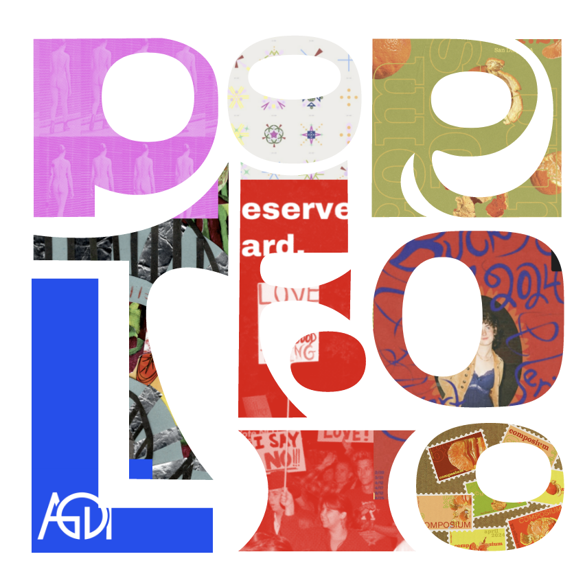

Abbie Buchwald is a passionate graphic designer known for their bright, detailed, and precise work. They bring a multidisciplinary approach to their work. Abbie is research-driven, values creativity, and enjoys solving design challenges. With skills in print design, interactive design, and coding, they aspire to work in nonprofit, environmental, or exhibition design. Currently an assistant museum designer, Abbie is focused on creating accessible, engaging experiences and is driven to explore diverse design fields.
Projects